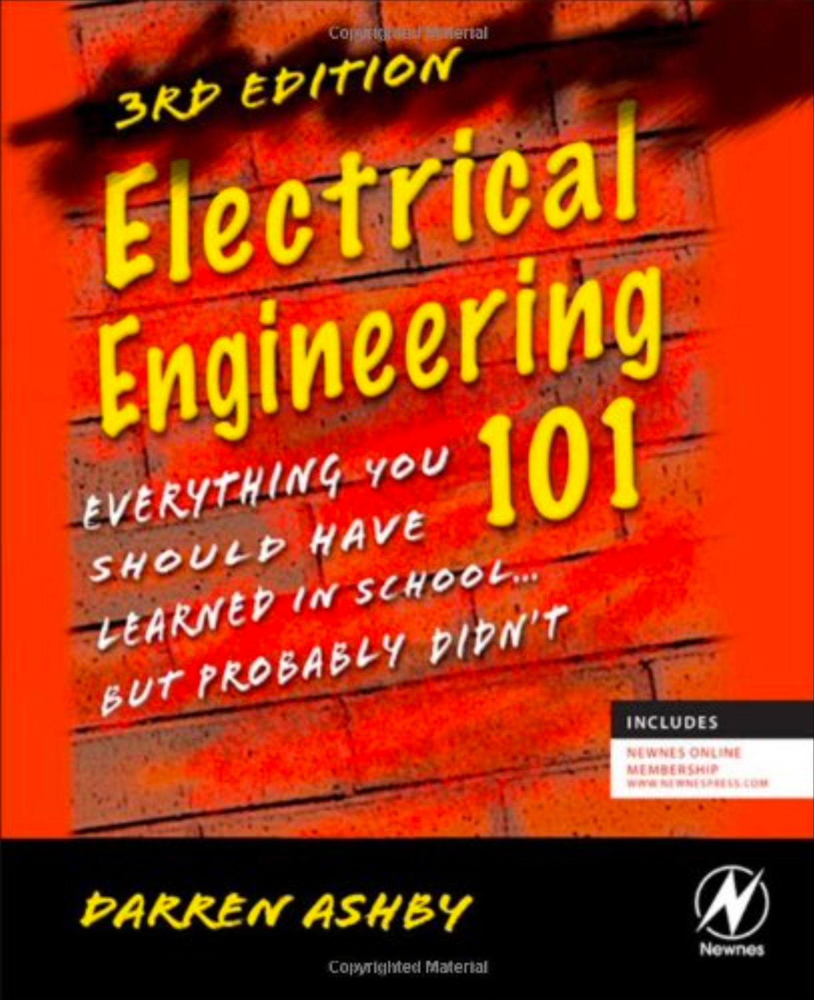

电气工程101: 你在学校应该学到的一切……但可能没有学到#  内容 前言 第一句话 概述 关于作者 第0章 电到底是什么? 鸡 vs 蛋 那么，什么是电？ 原子 现在怎么办？ 未来展望 只是看起来很神奇 第1章 工程101课本该教的三件事 单位计数！ 如何可视化电气元件 学习直观的方法 “LEGO” 工程学 第2章 基本理论 欧姆定律仍然有效：不断练习基础知识 关于时间 “带我出去?” 保持控制 开环增益与闭环增益 第3章 零件元件 部分导电 功率与热管理 神奇又神秘的运算放大器 负反馈 正反馈 它应该是逻辑的 微处理器 / 微控制器基础 攀登软件语言山 输入与输出 第四章 真实世界 弥合鸿沟 模数转换与反向操作 要进行一点数模转换，才能完成一次模数转换 当器件不够理想时 稳健设计 我最喜欢的一些电路 拥有你自己的——这里有几个示例 电源 让物体运动：机电世界 保持速度 其他类型电机 第 5 章 工具 让无形变得可见 模拟器 电烙铁 人员工具 第6章 故障排除 准备开始排查 机器中的幽灵: 电磁干扰 时机就是一切 压力之下 做好应对意外的准备 代码迷们要小心了 第7章 感人至深的东西 人际交往技巧 成为一个外向的内向者 沟通技巧 特别给管理者的话 特别写给员工的话 如何打造一款伟大的产品 术语表